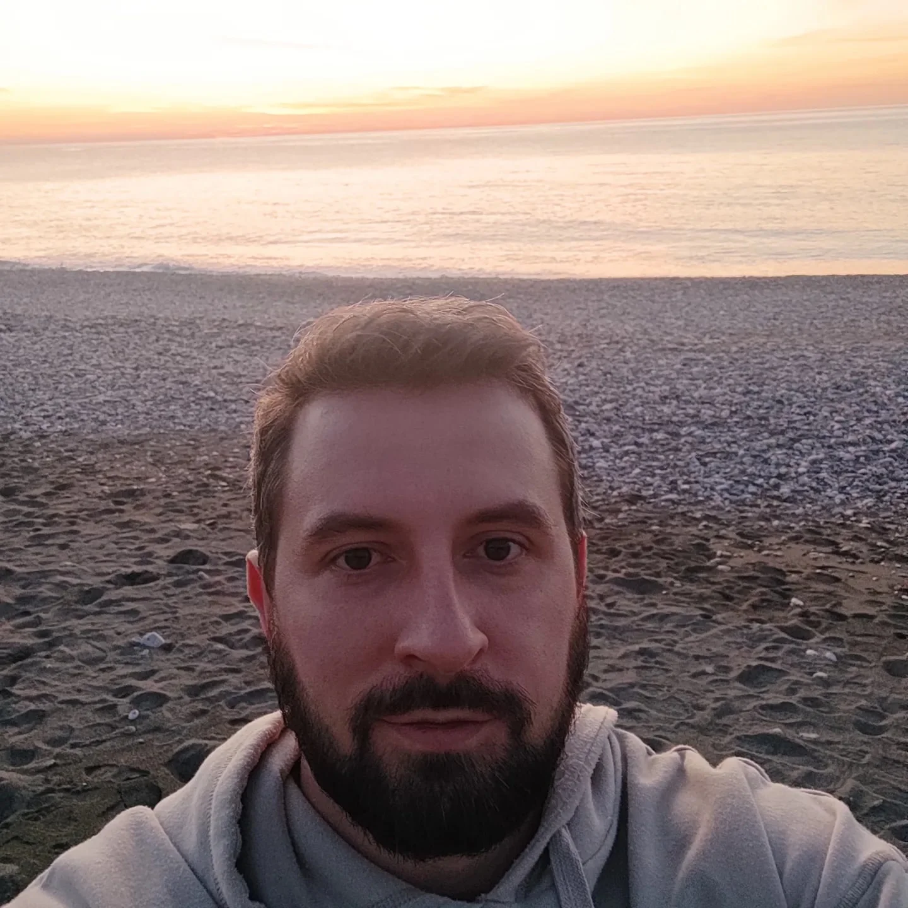
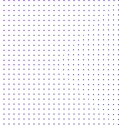

Ведущие специалисты нашей школы
Старший преподаватель

Илья Александров
Практикующий психолог (эмпатийное консультирование), регрессолог, универсальный контактер, проводник к ВЯ.
Разработка реабилитационных программ, арт-терапии, авторских методик и тренингов.
Работа с зависимым и созависимым поведением.
Групповое и индивидуальное консультирование.
Организатор проекта «Прими Себя» для подростков.В 2019 году оказал психологическую поддержку более 250 пациентам, страдающим алкогольной, игровой и наркотической зависимостью. Опыт работы - более 5 лет.Прошел обучение у Ирины Подзоровой по сонастройке с Высшим Я.Помощь людям по растворению блоков , которые мешают умению расслабляться и осознанно слышать Высшее Я.Консультирование и тестирование на аппаратах ауробук и кроуноскоп в Международном центре духовного развития «Кассиопея».
Старший преподаватель
Лариса Асташевская
Практикующий психолог, астролог, универсальный контактер, проводник к ВЯ
Психологическая поддержка в период семейных кризисов (измена, развод, конфликты)
Психотерапия с помощью метафорических ассоциативных карт
Обучение базовым астрологическим знаниям
Разработка и проведение тренингов личностного роста
Индивидуальное и групповое консультирование
Помощь в освобождении от эмоциональных блоков (обиды, страхи, вина и др.), мешающих осознанно соединяться со своим Высшим Я.
Я потомственный психолог. Причем в моем роду были не только психологи как таковые, также и религиозные служители, целители, педагоги. Образование (высшее): психолог, кризисный психолог, профессиональная переподготовка по психосоматике и телесной психотерапии. Школа коучинга по проработке блоков подсознания. Курсы базовый и продвинутый по работе с метафорическими ассоциативными картами. 25 лет частной психологической практики. На протяжении всей своей сознательной жизни обучаюсь, совершенствую свои профессиональные знания/умения/навыки. Прохожу тренинги личностного роста, чтобы всегда быть в ресурсном состоянии. Ко мне обращаются люди со своими проблемами, значит, я просто обязана быть «в хорошей форме». В юности я занималась хоккеем на траве – это красивая командная игра. С тех пор у меня осталось приятное ощущение, что я в игре и нужно регулярно тренироваться, чтобы играть и выигрывать. А с возрастом добавился образ тренера-наставника, и это играющий тренер. Когда я провожу свои тренинги, сама получаю огромное удовольствие от этого. В моих тренингах я — тренер, но и участник в равной степени. Мой главный талант – вдохновлять и мотивировать. Убеждена, что все люди талантливы – нужно только вовремя усилить свои сильные стороны.
Миссия Школы ментального здоровья
наша миссия
— объединить психологию с эзотерикой и научить людей исцелять себя самостоятельно. Вне зависимости от возраста и географии
У нас вы научитесь
- Концентрировать внимание и жить настоящим моментом
- Соединяться и осознанно общаться со своим Высшим Я
- Решать задачи в разных сферах жизни в сонастройке с Высшим Я
- Получать ответы от личных духовных кураторов
- Выявлять психоэмоциональные блоки в структуре тела
- Управлять своим эмоциональным состоянием
Направления деятельности Проекта Mental Healing
-
ШКОЛА САМОИСЦЕЛЕНИЯ
Здесь в открытом доступе можно прослушать тематические вебинары, пройти медитации и получить ответы на интересующие вопросыподробнее -
ОБУЧАЮЩИЕ КУРСЫ
У нас можно обучаться онлайн и оффлайнподробнее -
ОБУЧЕНИЕ МАСТЕРОВ ШКОЛЫ
Здесь можно получить навыки психологической помощиподробнее

Условия обучения
В Школе MENTAL HEALING при прохождении офлайн курса, участнику необходимо приехать в Воронеж, в Международный центр духовного развития «Кассиопея». Чтобы получить доступ к онлай-курсу, участник заполняет регистрационную форму, указанную в соответствующем разделе интересующего курса и отправляет оплату. Размер оплаты не имеет фиксированной стоимости, он зависит от финансовых возможностей каждого участника в отдельности. Напоминаем, что наша Школа является дочерним направлением проекта Международный центр духовного развития «Кассиопея», поэтому мы придерживаемся такого же принципа дара по сердцу за все обучающие курсы, как и в самом центре. После оплаты первого урока администратор указанного курса добавляет участника в тематический общий чат в Телеграм. В чате админ размещает ссылку на первое видео, тем самым, открывая доступ для изучения материала. Обратную связь от мастеров курса по просмотренному уроку можно получать на факультативных занятиях, которые будут проходить в Zoom, согласно расписанию. Ссылка на вход в Zoom всегда размещается за час до встречи в чате того курса, по которому участник решил проходить обучение. Таким образом, участнику последовательно будет предоставлен доступ ко всем запланированным видео-урокам. Продолжительность урока – от 30 до 60 минут каждый Видео размещено на образовательной платформе «MEMBERLUX».
Оставьте заявкуна один из наших курсов
И наши волонтеры с вами свяжутся с вами